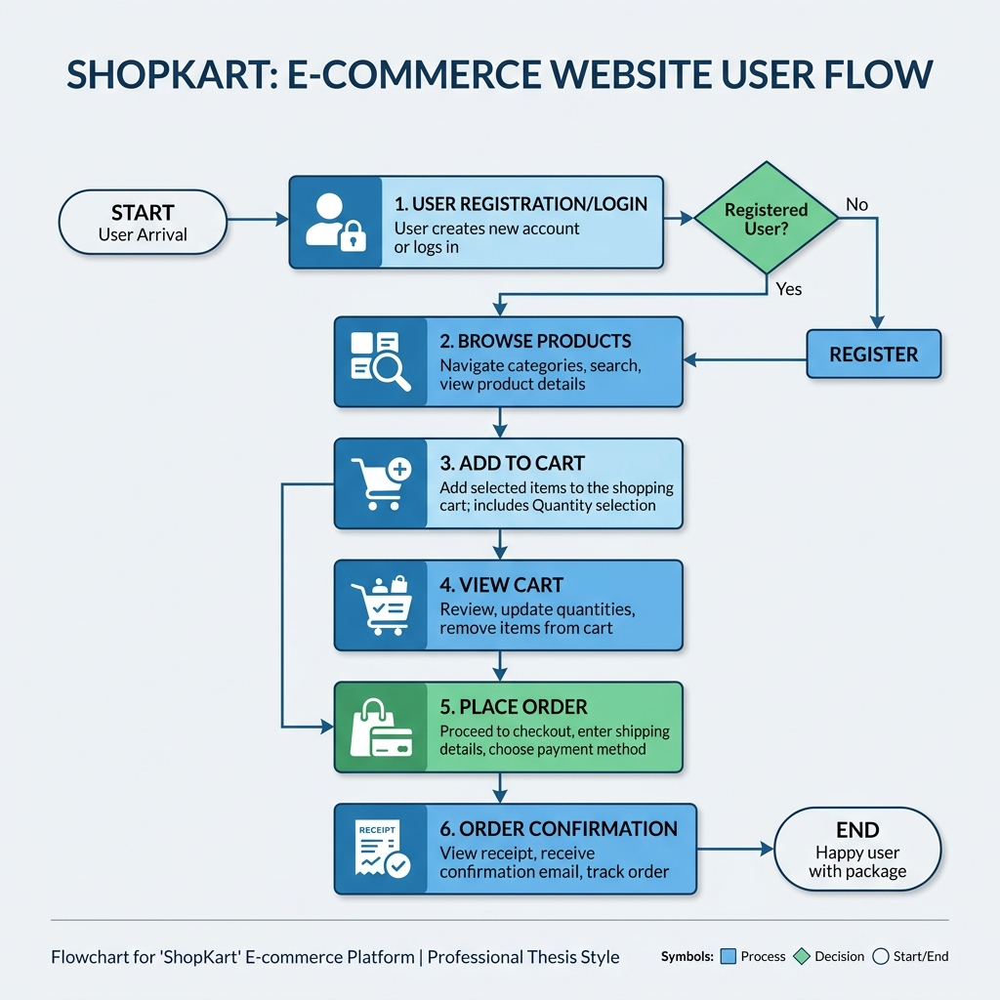

ShopKart
Web-Based E-Commerce Application Using Spring Boot
Domain: E-Commerce / Information Technology
Technologies: Java 17, Spring Boot 3.3.4, JPA, JSP, MySQL, Docker
Submitted by
Sanket Gabhud
Academic Year: 2025–2026
Under the guidance of
[SUPERVISOR NAME]
Certificate
This is to certify that the project report entitled "ShopKart — Web-Based E-Commerce Application Using Spring Boot" submitted by Sanket Gabhud is a record of bona fide work carried out under my supervision.
_________________________
Signature of Guide
_________________________
Signature of HOD
Date: _______________
Declaration
I hereby declare that this project report titled ShopKart — Web-Based E-Commerce Application Using Spring Boot is my own original work. The implementation, analysis, and documentation have been carried out by me under the guidance of my supervisor. Sources of information and assistance from others have been duly acknowledged.
_________________________
Sanket Gabhud
Date: _______________
Abstract
Electronic commerce has become a fundamental channel for retail and service delivery. ShopKart is a full-stack style web application built on Java and Spring Boot, following a classic Model–View–Controller (MVC) pattern.
The system distinguishes customers and administrators through separate entities and session attributes. Customers can register, browse products, manage shopping carts, and place orders. Administrators have access to a comprehensive dashboard with sales and activity metrics, catalog management, and order oversight.
The application leverages Spring Data JPA for persistence, JSP for server-side rendering, and BCrypt for secure password hashing. This report documents the requirements, design, implementation details, and test cases of the ShopKart system.
Table of Contents
- 1. Introduction
- 2. Literature Survey
- 3. System Analysis
- 4. System Design
- 5. Implementation
- 6. Testing & Results
- 7. Conclusion & Future Scope
- 8. Appendices
Chapter 1: Introduction
1.1 Project Overview
ShopKart is a robust e-commerce simulation platform. It provides a seamless interface for users to shop and for admins to manage the business. The application is built using the Spring Boot framework, ensuring scalability and ease of deployment.
1.2 Objectives
- To build a secure and responsive e-commerce platform.
- To implement a clear distinction between User and Admin roles.
- To automate inventory management and order processing.
- To provide data-driven insights through an admin dashboard.
Chapter 4: System Design
4.1 System Architecture
The application follows a standard N-Tier architecture, separating the presentation, business logic, and data layers.

Figure 4.1: ShopKart N-Tier Architecture Diagram
4.2 User Workflow
The typical user journey from registration to order completion is illustrated below.

Figure 4.2: Customer Journey Flowchart
4.3 Database Schema
The relational schema includes entities for Customer, Product, CartItem, Order, and Admin. Relationships are managed via Spring Data JPA.
| Entity |
Primary Attributes |
| Customer |
Name, Email, Password (Hashed), Address, Phone |
| Product |
Name, Price, Stock, Category, Image |
| Order |
Customer Ref, Product Ref, Quantity, Status, Total |
| Admin |
Username, Email, Security Key |
Chapter 5: Implementation
5.1 Admin Dashboard & Analytics
The Admin Dashboard provides real-time metrics including total sales, order statuses, and top-selling products.

Figure 5.1: Admin Analytics Dashboard Mockup
5.2 Technical Stack
- Backend: Java 17, Spring Boot 3.3.4
- Persistence: Spring Data JPA with MySQL/H2
- Security: BCrypt Password Encoding
- Frontend: JSP, HTML5, CSS3, JavaScript
Chapter 6: Testing & Results
6.1 Test Cases
| Test ID |
Module |
Description |
Result |
| TC-01 |
Registration |
User can sign up with unique email |
Passed |
| TC-02 |
Order |
Stock decreases automatically after order |
Passed |
| TC-03 |
Admin |
Access denied to dashboard without security key |
Passed |
Chapter 7: Conclusion
ShopKart successfully demonstrates a functional e-commerce ecosystem. The integration of Spring Boot and JPA allows for efficient data handling, while the custom admin dashboard empowers management with actionable insights.
7.1 Future Enhancements
- Integration with Payment Gateways (Stripe/Razorpay).
- Implementation of JWT-based RESTful APIs.
- Real-time Email/SMS notifications for order status updates.